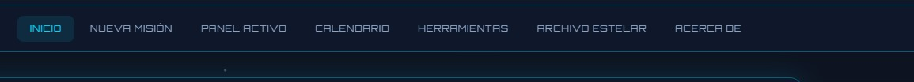

Anexo: Fichas individuales (archivos separados por integrante)
3. Introducción
3.1 Propósito del proyecto
El presente proyecto tiene como propósito desarrollar una aplicación web funcional
que integre los conocimientos adquiridos en el curso de Aplicaciones y Programación Web:
HTML5 semántico, hojas de estilo CSS, programación en JavaScript y almacenamiento local en el navegador.
Se eligió la temática lista de tareas, implementada bajo la identidad visual
ÓRBITA — Centro de misiones, un enfoque original que presenta cada tarea como una
“misión” en órbita, con prioridades, categorías, fechas límite y un archivo de misiones completadas.
3.2 ¿Qué contiene el sitio web?
El sitio web es una aplicación de una sola página (single page) organizada en cinco secciones accesibles desde el menú de navegación:
Inicio: presentación del sistema, estadísticas de misiones y panel radar decorativo.
Nueva misión: formulario para registrar tareas con validación de campos.
Panel activo: listado de tareas pendientes, filtro por categoría y opción de resaltar urgentes.
Archivo estelar: tareas completadas, con sección que se puede mostrar u ocultar.
Acerca de: información del proyecto y créditos técnicos.
Los datos persisten en el navegador mediante localStorage, de modo que las misiones
registradas permanecen disponibles al recargar la página. El usuario puede alternar entre tema
visual noche (espacial) y día.
3.3 Público objetivo
Estudiantes, profesionales o cualquier persona que necesite organizar actividades diarias
de forma sencilla, con una interfaz clara y moderna accesible desde cualquier navegador actual.
4. Capturas de pantalla del desarrollo
Importante: Guarde sus capturas en documentacion/capturas/ con los nombres indicados.
Cuando existan las imágenes, reemplace el recuadro punteado automáticamente (si el archivo existe se mostrará la imagen).
Captura 1 — Estructura de carpetas del proyecto
Insertar: explorador de archivos mostrando WEB/, css/, js/, documentacion/
Captura 2 — Edición del archivo index.html (creación HTML)
Insertar: editor con index.html abierto (etiquetas semánticas, menú, secciones)
Captura 3 — Página principal / sección Inicio
Insertar: navegador en #inicio con estadísticas y radar
Captura 4 — Menú de navegación y diseño semántico

Insertar: barra de navegación con los 5 enlaces visibles
Captura 5 — Formulario de nueva misión (estado inicial)
Insertar: sección Nueva misión con campos vacíos
Captura 6 — Validación del formulario (mensajes de error)
Insertar: formulario con errores visibles (campos obligatorios, fecha inválida, etc.)
Captura 7 — Misión registrada correctamente (toast de éxito)
Insertar: mensaje de confirmación tras enviar el formulario
Captura 8 — Panel de misiones activas con tarjetas
Insertar: lista de tareas con prioridades, filtro y botones completar/eliminar
function validarCampoFecha(valor) {
if (!valor) return "La fecha límite es obligatoria.";
const seleccionada = new Date(valor + "T00:00:00");
const hoy = new Date();
hoy.setHours(0, 0, 0, 0);
if (seleccionada < hoy) {
return "La fecha no puede ser anterior a hoy.";
}
return "";
}
5. Descripción técnica
5.1 Archivos creados
Archivo / carpeta
Tipo
Descripción
index.html
HTML5
Página principal: estructura semántica, menú, 5 secciones, formulario y enlaces a CSS/JS.
css/styles.css
CSS3
Estilos externos: variables, tema noche/día, layout, tarjetas, animaciones, responsive.
js/app.js
JavaScript
Lógica de la aplicación: validación, CRUD de misiones, eventos, localStorage.
documentacion/
Informe
Carpeta de entrega documental (este archivo, fichas, capturas).
localStorage API — Persistencia de datos sin servidor.
Google Fonts — Orbitron y Exo 2 (tipografía del tema espacial).
6. Conclusión grupal
La elaboración del proyecto ÓRBITA permitió al grupo aplicar de manera integrada
las tecnologías fundamentales del desarrollo web front-end. Se logró una aplicación
funcional, organizada y visualmente coherente, que va más allá de una lista de
tareas convencional al incorporar una metáfora de “misiones espaciales” sin sacrificar la usabilidad.
Desde el punto de vista técnico, se reforzaron competencias en maquetación semántica,
diseño responsive con CSS y programación orientada a eventos en JavaScript,
incluyendo validación de datos, manipulación del DOM y almacenamiento local. La división por archivos
(index.html, styles.css, app.js) facilitó el trabajo colaborativo
y la preparación de la exposición individual por secciones.
Como aspectos de mejora futura, el grupo identifica la posibilidad de añadir edición de misiones
en línea, sincronización en la nube, notificaciones de fechas límite y mayor cobertura de pruebas
de accesibilidad (WCAG).
En conjunto, se considera que el entregable cumple los requisitos de la Fase 1
del proyecto grupal y constituye una base sólida para ampliaciones en fases posteriores del curso.
Firmas del grupo (opcional en versión impresa):
Integrante
Firma
[Nombre 1]
_________________________
[Nombre 2]
_________________________
[Nombre 3]
_________________________
7. Anexo — Fichas individuales
Cada integrante debe entregar una ficha individual (una página por persona),
usando el archivo Ficha_Individual_PLANTILLA.html incluido en esta carpeta.
Duplique la plantilla, complete sus datos y expórtela a PDF junto con este documento.
Distribución sugerida para la exposición individual:
Integrante (ejemplo)
Sección a explicar
Archivo principal
Integrante 1
HTML — estructura y formulario
index.html
Integrante 2
CSS — diseño y temas
css/styles.css
Integrante 3
JavaScript — validación y lógica
js/app.js
Documentación generada para el Proyecto Grupal ÓRBITA — Aplicaciones y Programación Web — Fase 1
Para exportar a PDF: Ctrl + P → Guardar como PDF (recomendado: Google Chrome o Microsoft Edge).